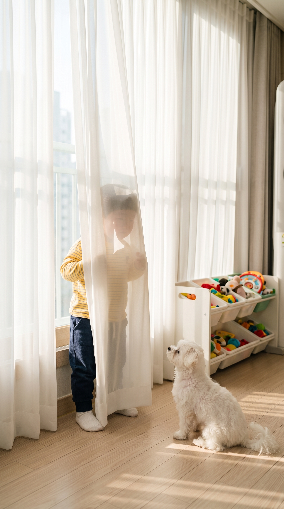
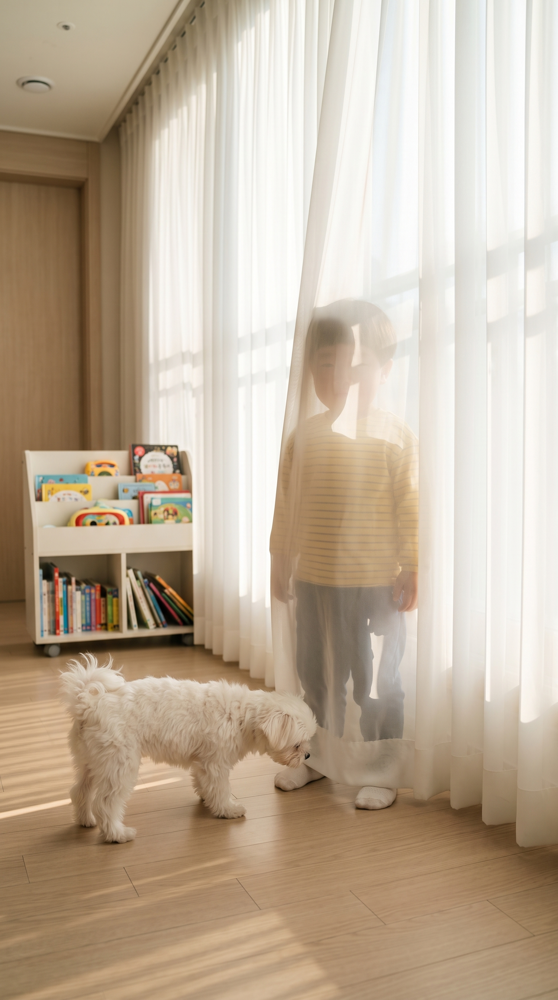
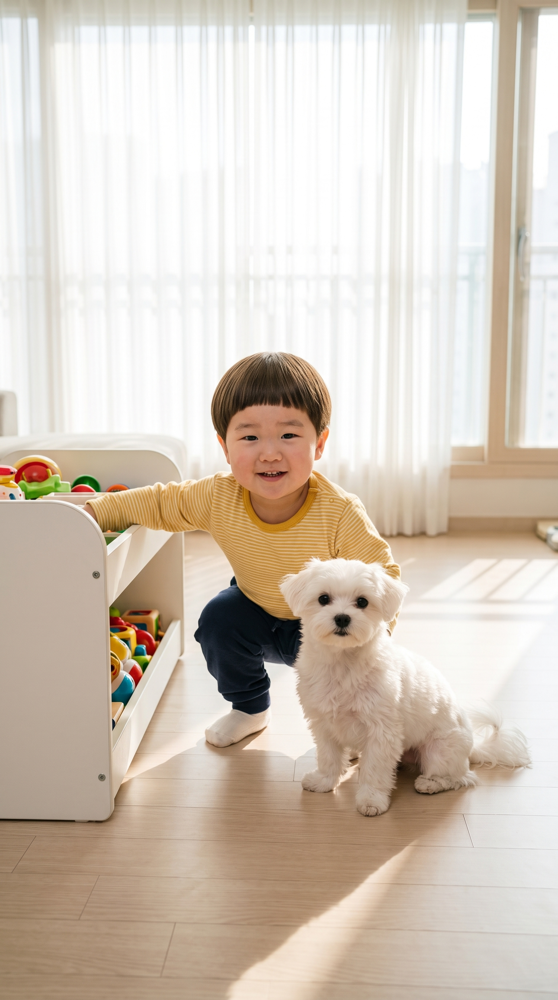

도윤이와 콩이: 커튼 뒤에 숨었는데 발이 다 보이는 숨바꼭질
이야기 — «도윤이 없다~!» 커튼 뒤에 숨었는데 양말 발이 다 보인다. 콩이는 냄새로 바로 찾고, 도윤이는 이번엔 선반 뒤에 «진짜» 숨는다 — 역시 다 보인다.
사진 이름 끝 글자로 구분됩니다. 프롬프트는 전부 보내기 전 검사 통과(차단 0 · 경고 0).
만드시면 영상 세 개를 맥북으로 에어드롭해 주세요.
사진 이름 끝 글자로 구분됩니다. 프롬프트는 전부 보내기 전 검사 통과(차단 0 · 경고 0).
만드시면 영상 세 개를 맥북으로 에어드롭해 주세요.
1
상황 · 6초
커튼 뒤에 숨었는데 몸 반쪽과 양말 발이 다 보이고, 콩이가 빤히 쳐다보며
📷
hideseek-c1-A-17826c.jpg
📲 길게 눌러 «사진 앱에 저장» · 원본 열기
{kind=link}
🗣 «콩이야, 도윤이 없다~!»
1컷 프롬프트 · 길이 6초
Prompt: 9:16 vertical video in Korea. Maintain exact appearance from start frame: cute 24-month-old Korean toddler boy Doyoon in a yellow striped long-sleeve t-shirt, navy jogger pants, and white socks and his small fluffy white Maltese puppy friend Kongi in a bright sunny Korean apartment living room with long white sheer curtains by a big window and a light wood floor in the afternoon. Static camera, eye-level medium shot. Doyoon stands still hidden behind the long white curtain with his feet in white socks sticking out underneath, while Kongi sits on the floor, stares at the curtain and tilts its head. Dialogue: "콩이야, 도윤이 없다~!" Audio: Solo 24-month-old Korean toddler boy voice speaking clear Korean from behind the curtain, quiet indoor room tone.
2
전개 · 8초
콩이가 쪼르르 와서 양말 냄새를 킁킁, 꼬리 살랑
📷
hideseek-c2-A-e5cf4f.jpg
📲 길게 눌러 «사진 앱에 저장» · 원본 열기
{kind=link}
🗣 «히히, 콩이 못 찾지롱!»
2컷 프롬프트 · 길이 8초
Prompt: 9:16 vertical video continuing from previous scene in Korea. Maintain exact appearance from start frame: cute 24-month-old Korean toddler boy Doyoon in a yellow striped long-sleeve t-shirt, navy jogger pants, and white socks and his small fluffy white Maltese puppy friend Kongi in a bright sunny Korean apartment living room with long white sheer curtains by a big window and a light wood floor in the afternoon. Static camera, eye-level medium shot. Kongi trots to the curtain, sniffs the white socks sticking out underneath and wags its tail happily, while Doyoon stays hidden behind the curtain. Dialogue: "히히, 콩이 못 찾지롱!" Audio: Solo 24-month-old Korean toddler boy voice speaking clear Korean in a playful tone from behind the curtain, soft puppy sniffing, quiet indoor room tone.
3
반전 · 8초
이번엔 장난감 선반 뒤에 쪼그려 앉았는데 다 보이고, 콩이는 이미 옆에
📷
hideseek-c3-A-34a18f.jpg
📲 길게 눌러 «사진 앱에 저장» · 원본 열기
{kind=link}
🗣 «이번엔 진짜 못 찾지?»
3컷 프롬프트 · 길이 8초
Prompt: 9:16 vertical video continuing from previous scene in Korea. Maintain exact appearance from start frame: cute 24-month-old Korean toddler boy Doyoon in a yellow striped long-sleeve t-shirt, navy jogger pants, and white socks and his small fluffy white Maltese puppy friend Kongi in a bright sunny Korean apartment living room with long white sheer curtains by a big window and a light wood floor in the afternoon. Static camera, eye-level medium shot. Doyoon crouches behind the low white toy shelf with his head and yellow striped t-shirt clearly visible above it, looking very proud of his hiding spot, while Kongi already sits right beside him and wags its tail. Dialogue: "이번엔 진짜 못 찾지?" Audio: Solo 24-month-old Korean toddler boy voice speaking clear Korean in a proud whisper, quiet indoor room tone.